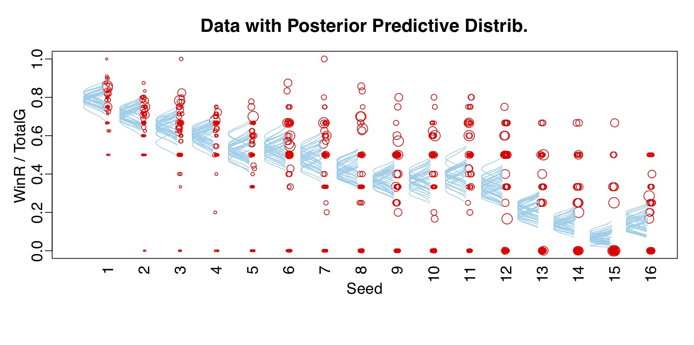

College basketball
The data source is kaggla competition for college basketball March madness. The data includes division one college basketball team regular season and tournament stats which includes shooting, rebounds, points, assists and turnovers.
The reason for choosing the data is that I have always been fascinated by the math and odds behind it. The probability of guessing all 63 games correctly is 1 out 2^63, which is 9.2 quintillion. You are more likely to become the president than getting it right. Each year over 60 million Americans fill out a bracket, even people who never watched a single game does. 1 billions dollars Potentially spend on off-book gambling. According to CNBC, unproductive workers during March madness amounted to about 6.3 billion in corporate losses last year. Rather than guess, I want to show some basic graphs on the game stats to help build brackets for the future. As a result of doing ML model and bayesian model on this data, I want to eventually create a comprehensive website with everything I have.
Regular Season
The first graph shows the winning teams of regular season's accumulative shot attempts and shot makes, the longer the team is in Davison I the more shots they will have. There is a clear trend in the data that winning team always shots around 50%. That’s a strong indication a team is good if that team shoots around 50% during regular season. And this trend is very similar in the tournament game as well, so this should translates well into March madness predictions (you can adjust the x axis or click “tournament” on the menu to see the tournament data graphs)
The second graph is showing team average defense rebounds and offense rebounds in regular season. The graph here shows top 10 defense and offense rebounds teams, and you can switch between the two. Once you choose, you can also see the tooltip. Regular season games are fast-paced games compare to tournament games, the defense intensity is different. Therefore, we see more offense rebounds in regular season games.
The third graph shows 3-points are increasingly becoming bigger part in college basketball. It is probably influenced by how NBA stars like Stephen Curry and NBA teams have changed their style of game. However, it does not seem to work well in college, we can see 3-points attempts is increasing in a faster rate than 3-points makes.(you can zoom in and out the graph.)
The forth graph shows Top 10 teams that have the largest regular season average winning margin. We can see all the college basketball powerhouse are all list on this graph such as Kansas, North Carolina, Duke etc. This match our first graph showing the traditionally strong teams have more accumulative shot attempts and shot makes, and they also win game with bigger margin.
Tournament.
What is March Madness?
March Madness is The NCAA Division I men’s basketball tournament is a single-elimination tournament of 68 teams that compete in seven rounds for the national championship. The penultimate round is known as the Final Four, when only (you guessed it) four teams are left. The inaugural tournament had just eight teams, and saw Oregon beat Ohio State 46-33 for the title. In 1951, the field doubled to 16, and kept expanding over the next few decades until 1985, when the modern format of a 64-team tournament began. In 2001, after the Mountain West Conference joined Division I and received an automatic bid, pushing the total teams to 65, a single game was added prior to the first round. In 2011, three more teams were added, and with them, three more games to round out the First Four.
Tournament games is much less than regular season games, so we see most teams are on the lower end of x axis, however if we look at the few team on the higher end of x axis, we can see all the power house of college basketball games. That shows us there are is a consistence for strong college basketball programs, so we can have more confidence in the stronger college basketball programs.
Defense are much tougher in tournament, where you can see number of defensive rebounds increases and offensive rebounds decreases. And this category of regular season data might not translate well into predictions. Since the difference is pretty big between tournament and regular season.
As a result of increasing defense intensity, where you can see the difference between shot attempts and shot makes become even bigger. The game is changing but this make me wonder if 3-pointers are the answer to winning in March and April.(you can zoom in and out the graph.)
Becasue of less tournament games is played than regular season games, The average winning margin won't tell us much of how good a team is. Therefore, we are showing Top 10 teams with the biggest accumulative winning margin. Most of the teams on this list is the same that have the largest average winning margin in regular season, which shows that regular season average winning margin might be a good predictor for tournament results.
Bayesian Analysis
How does the seeding works?
The selection process for college basketball's NCAA Division I Men's and Women's Basketball Championships determines which teams (68 men's, 64 women's) will enter the tournaments (the centerpieces of the basketball championship frenzy known as "March Madness") and their seedings and matchups in the knockout bracket. Thirty-two teams gain automatic entry through winning their conference's championship. The remaining teams (36 men's, 32 women's) rely on the selection committee to award them an at-large bid in the tournament. The selection process primarily takes place on Selection Sunday and the days leading up to it. Selection Sunday is also when the men's brackets and seeds are released to the public. The women's championship brackets and seeds are announced one day later, on Selection Monday.
I decide to use Bayesian Anylsis to see if seeding impact as much as people think it does. The models I decide to use are following ones.
Model— hierarchical model: is a model in which lower levels are sorted under a hierarchy of successively higher-level units. Data is grouped into clusters at one or more levels, and the influence of the clusters on the data points contained in them is taken account in any statistical analysis. I will specify hierarchical model we used from the bottom to the top. Y follows binomial distribution with parameters mu and N[i]; Mu follows beta distribution with parameters omega and kappa; Omega follows logistic distribution with parameter a0 and a[j]; a[j] follows a normal distribution.
Model— generalized linear model: the generalized linear model (GLM) is a flexible generalization of ordinary linear regression that allows for response variables that have error distribution models other than a normal distribution. The GLM generalizes linear regression by allowing the linear model to be related to the response variable via a link function and by allowing the magnitude of the variance of each measurement to be a function of its predicted value. The formal definition of the GLM is " = f ︎(lin(x), [parameters]︎); y ∼ pdf︎(", [parameters]︎). The graph below can show what GLM looks like and unlike linear regression, GLM will generate umbrellas to cover the points.
Our Analysis on Seeding impact:
Two graphs above show beat1 and omega. Not only the representativeness but also the accuracy and efficiency, these two parameters look pretty good. As for the panel on the left top, beat1 convergence quite well since for each iterations, it moves at the same pack and overlap each other. As for the panel on the right top, lines also converge very well and it is worth noting that the effective sample size is as large as 1827.1. As for the panel on the left, lines overlap well and the value of shrink factor is 1 in the 5000 iteration, which means difference between chains is quite equal to the variance within chains. The last panel on the right bottom shows density overlap well and the value of MCSE is pretty low. When it comes to the graph of omega, four panels are quite the same as that of beta1.
Machine Learning
At this moment I am still making change to the Machine learning model to get the best prediction power. Once it is finished, it will be upload to the website.